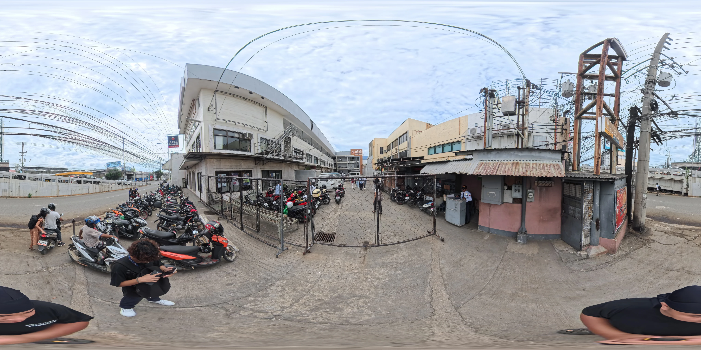

Skip to the map
EduTrack
ACLC College, Mandaue Campus
Home
Enrollment map
Where to go on enrollment day, starting from the main gate. No account needed.

Placeholder image. The final enrollment map will replace it.